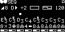

Gate Out
Sequencer gate output.
Clock Out
Primary clock output.
Clock In
Primary clock input. Internal clock is used when disconnected.
Reset In
Reset trigger input. Immediately resets the pattern (and internal clock, if using).
Reverse/Address In
In direct mode, reverses the sequence direction when gate active. In address mode, CV selects the next stage (0V to 5V range).
Half Clock In
Divides the clock by 2 when gate active.
External Gate 1 In
Gate input for the external gate 1 gate pattern.
External Gate 2 In
Gate input for the external gate 2 gate pattern.
Pitch CV Out
Sequencer pitch CV output (1V per octave).